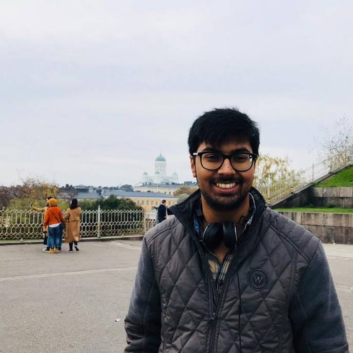
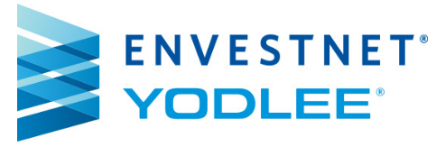
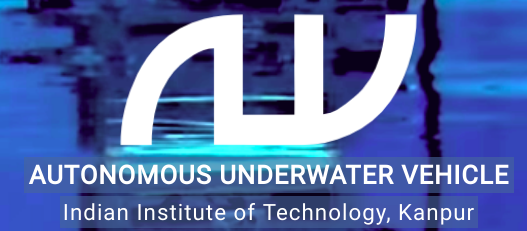

Final Year Undergraduate Student
Department of Computer Science
Indian Institute of Technology (IIT) Kanpur
siddsax at iitk dot ac dot in


Bio
I am a Final year Computer Science undergraduate student at IIT Kanpur, working with Prof Piyush Rai and Prof Vinay Namboodiri. My research interests lie at the intersection of deep learning and Bayesian modeling, leveraging the flexibility of the former and rigor and extensive nature of the latter.
I have previously spent two wonderful semesters at Aalto University working on multi-label classification with very few labeled instances, where I came up with generative models that can leverage unlabelled data and generate new training instances that can improve the accuracies of any supervised model itself. This work is presently under review. Before that, I spent one summer eventful summer at Envestnet Yodlee, Bangalore working with the energetic Dr. Om Deshmukh on online drift analysis for instance selection in big data. This work has been filed as US Patent and is patent pending.
In my free time, I write machine blogs ( see the top right corner of this site) and tutorials, for which the code base are available at my Github. I have open-sourced codebases for replicating several research papers while working on research projects. While the code-bases for my original research are published as the corresponding work gets published, on my GitHub. I also write paper summaries to keep myself motivated to read more papers and also help others on the side :) that can be found here. I was also part of IIT Kanpur's Autonomous Underwater Vehicle team building the first vehicle 'Varun' that came in 2nd at NIOT SAVe. While I devoted 3 years of my undergraduate years being part of the awesome journalism body here at IIT Kanpur, Vox Populi later serving as an Editor.